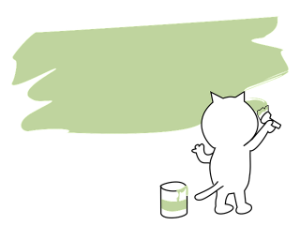
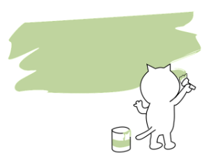

I'm Mona.
a programmer in the making.


This is my personal site. I mean, my very first personal site about myself made by myself. How do you like it?
I decided to deepen my programming knowledge from my bachelor studies, starting with frontend web development. With the help of video courses, a lot of internet research and many exercises, I study a minimum of half an hour every day.
I am a cat person. Studying every day, my cats Pablo and Totoro are sitting next to me or on the table like giving me more motivation to move on studying. I love talk to them and I believe that they do understand me. They also need to play a lot and they love to eat and purr.